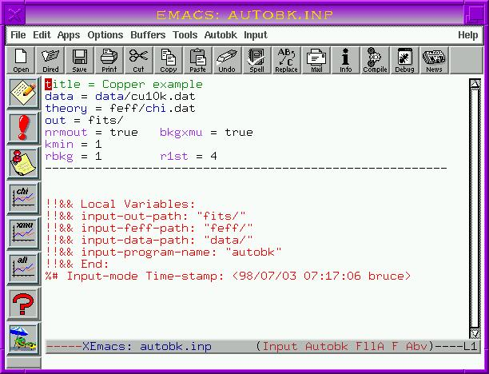
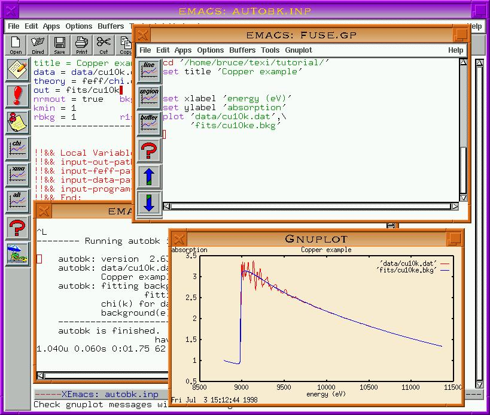

To begin editing an AUTOBK input file, type C-x C-f or select
Open File from the Files menu. You will be asked for the
name of a file in the `feff' subdirectory. Before responding with
a name, delete the characters `feff/' so that you will open a file
in the `Cu' subdirectory. Then type out `autobk.inp'. You
will be presented with a blank window. Notice that you are now in
Autobk minor mode, the menu bar has the Autobk label, and
there is an Autobk menu in the menu bar.
Before writing a template, let's set several variables that will be
useful in the next few steps of the tutorial. In the Input menu
you will notice options for Set path to input data, Set
path to feff files, and Set output path. The key sequences for
these are C-c C-d followed by d, f, and o
respectively. These are used to tell @fuse{} where to find different
sorts of files. Run each of these functions using `data/' as the
data path, `feff/' as the feff path, and `data/' as the output
path.
Now insert a template by typing C-c C-t t, selecting `Autobk
template' from the `Autobk' menu, or clicking mouse-1 on the
top-most toolbar icon. Note that the information about file paths that
you just entered has appeared in appropriate places in the template.
Note that, just as with the ATOMS template, hotspot markings have
been placed in the template as a visual cue for where keyword values
must be inserted. If you enter reasonable data at each hotspot, it is
quite likely that your input file will run to completion.
Now fill in appropriate values at each hotpot. Use values of 1,
1, and 4 for kmin, rmin, and rmax
respectively. Write `cu10k.dat' after `data/' for the
data keyword and `chi.dat' after `feff/' for the
theory keyword. Pick a good basename for the output files,
`cu10k' should do just fine. You can delete the line with
e0 as we will let AUTOBK find it. Now place the screen
cursor on one of the keywords, kmin for example. Hit M-?.
This command causes @fuse{} to display a description of the keyword
under the screen cursor in the echo area. Now hit M-ret.
If you put a number in as the value for kmin, you will see a
message in the echo area saying that this value is ok. Try changing the
value of kmin to q and hitting M-ret again.
Don't forget to change it back! Now place the screen cursor on the
data keyword and try M-? and M-ret again.
Notice that the keyword checking facility knows about and checks for
readable files. If you like the help given by M-?, you can have
it happen automatically by hiting C-c C-b t or selecting
Fuse-doc mode from the top of the Input menu. With
fuse-doc mode turned on, a keyword description will automatically be
displayed in the echo area whenever the screen cursor comes to rest on a
keyword. This works in any program minor mode. The messages displayed
are the same as those displayed by C-c C-b k or the question mark
icon in the toolbar.
Now finish filling in the template and save it. It should look like Figure 6.
Several interesting things happened when you saved this file. The Local
Variables list was written to this files just as it was to
`atoms.inp' and `feff.inp'. Notice that the values for file
paths that you entered earlier were written to the list. The next time
that you edit this file, it will not be necessary to re-enter that
information. @fuse{} will read it from the Local Variables list. Also
note that a time stamp was placed after the Local Variables list. This
is updated every time you save the file so you will always know when you
last edited the file. Now move the mouse cursor so it is over the line
that specifies the data file. See how the background flashes orange as
soon as the cursor is over either the keyword data or the
filename? This orange flashing is a visual cue in @fuse{} that the
mouse cursor is in a position where hitting S-mouse-3 will do
something. That something depends on the kind of input file you are
editing and on the location of the mouse cursor. In this case, hitting
S-MOUSE-3 will open and display the file under the cursor. These
orange areas are set when the input file is first visited and whenever it
is saved. You can turn off the orange flashing for a given buffer in
the Input - Miscellaneous submenu.
Figure 6: Completed AUTOBK input file

Now run AUTOBK. Note that the run-time messages from AUTOBK will be added to those already in the run-time messages buffer. Also note that the elapsed time of the run is written to the buffer in the run-time frame. This is printed out in the form of your computers `time' shell command. On my Linux system using bash, it looks like this:
193.560u 0.160s 0:09.25 97.2% 0+0k 0+0io 171pf+0w
The relevant number is the third one. This says that that particular AUTOBK run took 0 minutes and 9.25 seconds. Check the man pages for your shell for complete details about the `time' command.
Once the run is finished (it should not take long), there are several
things that can be plotted. In the Autobk menu there are several
entries under the heading Plotting. The things that can be
displayed automatically from this input file are the @greek{mu,E} data
along with the background (C-c C-p b and shown in Figure 7),
@greek{chi,k} (C-c C-p k), and @greek{chi,k} along with the
theoretical @greek{chi,k} from the FEFF run (C-c C-p t).
The @greek{mu,E} and @greek{chi,k} plots are also bound to toolbar
icons.
Although we will not be using this feature of AUTOBK during this
tutorial, it has the ability to batch process @greek{mu,E} data into
@greek{chi,k}. The instructions then look the same for each data set
and are separated in the input file by lines of dashes. In @fuse{}, a
line-of-dashes separated set of instructions is called a stanza.
AUTOBK mode in @fuse{} has several functions for operating on
stanzas. In the Autobk menu there are options for running
AUTOBK on the entire file or on the stanza currently occupied by
the screen cursor. The plotting functions described in the last
paragraph all work on the current stanza. Additionally there is a
plotting function for displaying all @greek{chi,k} from the input file
(C-c C-p a and bound to the toolbar).
@ifnotinfo
Figure 7: Plotting the data and background

Plotting the output files from AUTOBK is an important part of
evaluating and understanding the result, but there is more to the
interpretation of data than making pretty pictures. For example, from
an AUTOBK run, it is important to know where @ezero{} is. Hit
C-c C-s e. A line with e0f = 8976.886 is inserted in
the stanza. Cool! Where did that come from?
Now hit C-c C-f l, select Look at log file from either the
Autobk or Input - Visit files menu, or hit the third
toolbar icon (the one with the thumbtack). Doing so displays the log
file from your autobk run. Somewhere around line 15 in the log file is
the final value of @ezero{} found by AUTOBK. The C-c C-f l
key sequence and its related menu and toolbar bindings are the common way
of examining log files in @fuse{}. That key sequence and the thumbtack
icon will always display the log file appropriate to the current input
file.(3) You can easily return to the input file by
hitting M-C-`.
@fuse{} is clever enough to search the log file for the final value of
@ezero{} and insert it into the input file. The e0f keyword
tells AUTOBK to fix @ezero{} to that value. If you want to play
around with other background removal parameter while keeping @ezero{}
fixed, e0f is the right keyword. In the next chapter you will
learn of other ways that @fuse{} is able to glean information from log
and other files for use in input files.
Go to the first, previous, next, last section, table of contents.